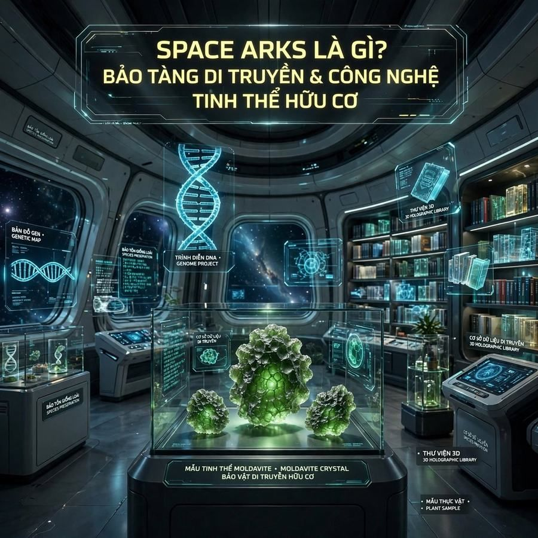
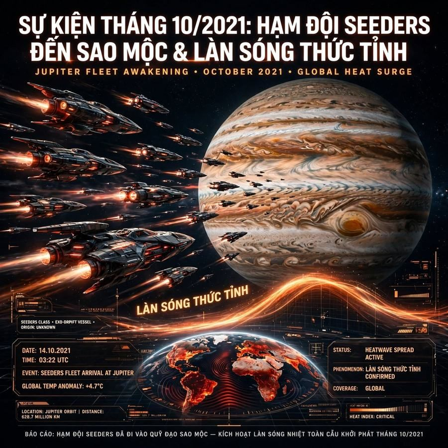
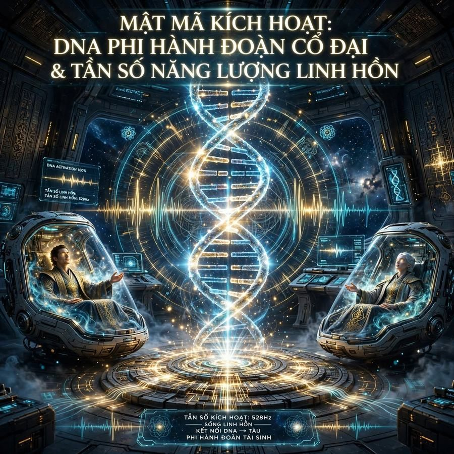
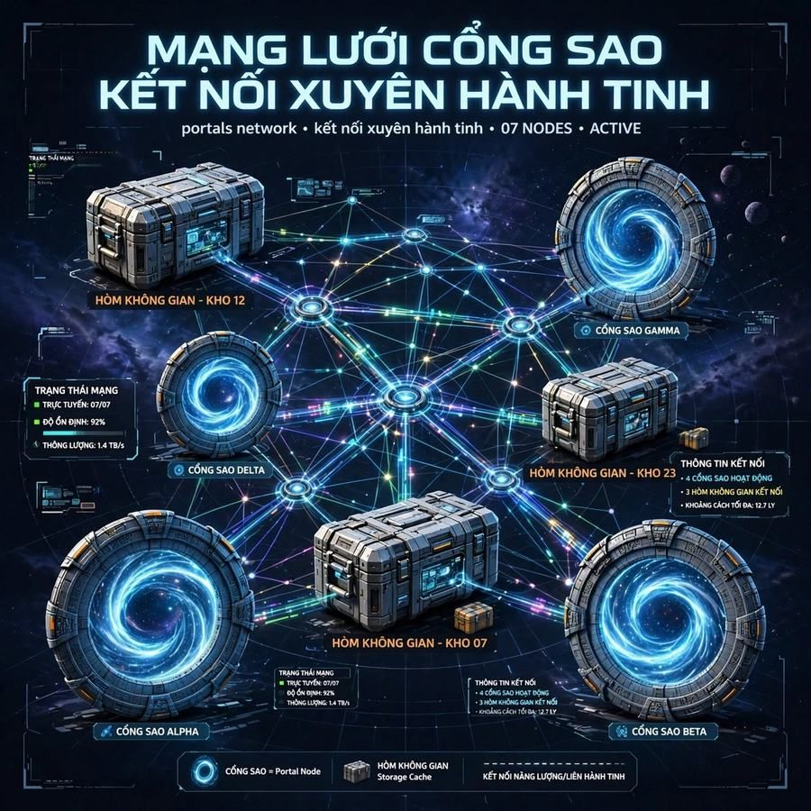
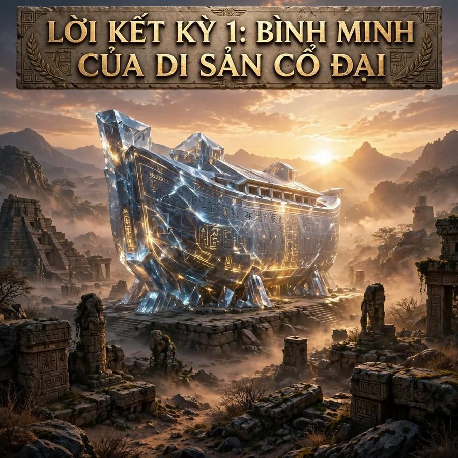

Trang chủ / Chuyên đề 6: Hòm Không Gian Cổ Đại / Kỳ 51
Chuyên đề 6 · Kỳ 51 / 80
BẢN CHẤT HÒM KHÔNG GIAN CỔ ĐẠI (SPACE ARKS) & SỰ TRỞ LẠI CỦA CÁC ĐẤNG SÁNG LẬP (THE SEEDERS)

Sau khi khép lại chuyên đề 5 đầy nghẹt thở về các Chương trình Không gian Bí mật (SSP), Hạm Đội Đen và chiến dịch giải phóng Hệ Mặt Trời của Liên Đoàn Thiên Hà, chúng ta chính thức bước sang chuyên đề 6: Bí Ẩn Các Hòm Không Gian Cổ Đại (Space Arks) Thức Tỉnh. Nếu như ở các chuyên đề trước, chúng ta đã tìm hiểu về các công nghệ do con người và các thế lực thiên hà xây dựng trong vài thập kỷ qua, thì chuyên đề 6 sẽ đưa chúng ta ngược về quá khứ xa xăm hàng trăm ngàn đến hàng triệu năm trước — nơi cất giữ những di sản công nghệ vĩ đại nhất của Liên Minh Các Đấng Sáng Lập (Intergalactic Confederation / The Seeders)! Hòm Không Gian (Space Ark) thực sự là gì? Tại sao những đại chiến hạm tinh thể hữu cơ khổng lồ này lại nằm chôn giấu âm thầm dưới lòng biển Đại Tây Dương, băng giá Nam Cực, sa mạc Ukraine, đảo Phục Sinh cho đến Mặt Trăng, Sao Hỏa và Sao Hải Vương? Sự kiện hạm đội Các Đấng Sáng Lập hạ cánh gần Sao Mộc vào tháng 10 năm 2021 đã kích hoạt đồng loạt mạng lưới Hòm Không Gian toàn cầu ra sao? Và tại sao chìa khóa kích hoạt những con tàu này không nằm ở vũ lực hay mã máy tính, mà nằm ở Mã gen DNA và Rung động Tần số Ý thức của phi hành đoàn cổ đại đang tái sinh trong cơ thể con người Trái Đất?
1. SPACE ARKS LÀ GÌ? BẢO TÀNG DI TRUYỀN & CÔNG NGHỆ TINH THỂ HỮU CƠ
Trong các hồ sơ giải mật exopolitics, Space Arks (Hòm Không Gian) là những con tàu vũ trụ cổ đại có kích thước vô cùng khổng lồ. A. Ngân Hàng Lưu Trữ Mẫu Gen DNA Toàn Cầu
- Bảo Tồn Di Sản Sinh Học Paa-Taal: Khi các thảm họa đại địa chất hoặc chiến tranh cổ đại đe dọa sự sống trên Trái Đất, Các Đấng Sáng Lập đã thu thập và lưu giữ toàn bộ mẫu DNA của đa dạng sinh học Trái Đất cùng mã di truyền Paa-Taal trong các Hòm Không Gian này.
- Thư Viện Tri Thức Ba Chiều (Halls of Records): Mỗi Hòm Không Gian đóng vai trò là một trung tâm lưu trữ tri thức toàn ảnh (Holographic Records), ghi lại trọn vẹn lịch sử văn minh thiên hà và các công nghệ giả kim lượng tử nguyên thủy. B. Công Nghệ Tinh Thể Hữu Cơ Gắn Liền Với Ý Thức
- Vật Liệu Tinh Thể Tự Phát Sáng: Khác với các tàu kim loại thô ráp, thành tàu và nội thất Hòm Không Gian được cấu tạo từ hợp kim tinh thể hữu cơ (đặc biệt là tinh thể Moldavite cao tần).
- Cơ Chế Sống Và Tương Tác Bằng Ý Thức: Con tàu mang đặc tính sinh học hữu cơ, có khả năng điều biến từ trường, tự chữa lành và phát ra âm thanh dao động êm dịu nâng cao nhận thức khi có sinh mệnh phù hợp tiến vào.

2. SỰ KIỆN THÁNG 10/2021: HẠM ĐỘI SEEDERS ĐẾN SAO MỘC & LÀN SÓNG THỨC TỈNH
Trong hàng ngàn năm, các Hòm Không Gian nằm chìm trong trạng thái "ngủ đông" dưới độ sâu vỏ Trái Đất và các thiên thể. Nhưng mọi thứ đã thay đổi hoàn toàn vào cuối năm 2021. A. Sự Trở Lại Của 24 Chủng Tộc Gieo Mầm (The Seeders Return)
- Hạm Đội Thiên Hà Hạ Cánh Tại Quỹ Đạo Sao Mộc: Tháng 10 năm 2021, một hạm đội khổng lồ thuộc Liên Minh Các Đấng Sáng Lập (24 chủng tộc Seeder / Intergalactic Confederation) đã tiến vào Hệ Mặt Trời và đỗ tại khu vực giữa Sao Mộc và vệ tinh Ganymede. B. Hiệu Ứng Cộng Hưởng & Tỏa Nhiệt Toàn Cầu
- Tự Động Kích Hoạt Theo Chu Kỳ Vũ Trụ: Sự hiện diện của hạm đội Mẹ đã phát ra dải xung sóng vô hướng cao tần, lập tức "đánh thức" các Hòm Không Gian bị chôn vùi.
- Gia Tăng Nhiệt Độ & Trường Từ Trường: Các đo đạc địa từ ghi nhận các khu vực chứa Hòm Không Gian (như Hồ Vostok ở Nam Cực, lòng biển Đại Tây Dương, sa mạc Kherson ở Ukraine, hay cực nam Sao Hải Vương) bắt đầu tỏa nhiệt đột ngột và phát ra dải điện từ ion hóa phát sáng!

3. MẬT MÃ KÍCH HOẠT: DNA PHI HÀNH ĐOÀN CỔ ĐẠI & TẦN SỐ NĂNG LƯỢNG LINH HỒN
Một trong những bí mật lớn nhất được giải mật chính là lý do tại sao bộ máy kiểm soát hay các lực lượng tiêu cực dù tìm thấy Hòm Không Gian từ nhiều thập kỷ trước vẫn hoàn toàn bế tắc không thể vận hành được tàu! A. Chìa Khóa Ý Thức Cá Nhân (Soul Vibration)
- Không Thể Chiếm Đoạt Bằng Vũ Lực: Hòm Không Gian chỉ phản ứng với tần số rung động tâm thức thuần khiết, lòng từ bi và sự hòa hợp. Mọi nỗ lực dùng công nghệ thô hay lòng tham để bẻ khóa đều bị ma trận từ trường của tàu đẩy lùi. B. Sự Tái Sinh Của Các Phi Hành Đoàn Cổ Đại (Incarnated Crew)
- Mã Gen Kích Hoạt Di Truyền: Linh hồn của các phi công và kỹ sư vận hành Hòm Không Gian thời cổ đại đã tái sinh trong thể xác con người Trái Đất hôm nay.
- Tương Hợp Di Truyền: Khi những cá nhân mang mã gen kích hoạt bước vào bên trong tàu, cấu trúc tinh thể của Hòm Không Gian sẽ nhận diện dải tần số DNA gốc, lập tức bừng sáng, mở cửa các khu vực niêm phong và kích hoạt ma trận điều khiển!

4. MẠNG LƯỚI CỔNG SAO (STARGATES) KẾT NỐI XUYÊN HÀNH TINH
Các Hòm Không Gian trên Trái Đất không đứng cô lập mà nằm trong một hệ thống mạng lưới năng lượng và giao thông siêu chiều thống nhất. A. Mạng Lưới Cổng Dịch Chuyển Tức Thời (Jumpgates / Portals)
- Kết Nối Xuyên Không Gian: Mỗi Hòm Không Gian được trang bị các cổng giao thoa từ trường (Stargates). Khi một Hòm Không Gian được kích hoạt, nó mở ra đường hầm không-thời gian nối thẳng đến các Hòm Không Gian khác trên Mặt Trăng, Sao Hỏa, Sao Kim hay trạm không gian tại Ganymede! B. Trụ Cột Cho Kỷ Nguyên Mới
- Phục Hồi Lưới Năng Lượng Địa Từ Gaia: Sự thức tỉnh của mạng lưới Hòm Không Gian đang trực tiếp giải phóng các dòng năng lượng cao tần vào dải địa từ Trái Đất, gia tốc sự sụp đổ của ma trận kiểm soát 3D và chuẩn bị cơ sở hạ tầng cho Kỷ nguyên Thăng hoa 5D!

5. LỜI KẾT KỲ 1: BÌNH MINH CỦA DI SẢN CỔ ĐẠI
Kỳ 1 của chuyên đề 6 khép lại khi bức màn bí mật về Hòm Không Gian Cổ Đại (Space Arks) chính thức được vén lên:
- Di Sản Cổ Đại Đã Đến Giờ Thức Tỉnh: Các Hòm Không Gian không phải là truyền thuyết viễn tưởng; chúng là những con tàu có thật đang tỏa nhiệt và phát sóng thức tỉnh bên dưới chân chúng ta!
- Con Người Trái Đất Nắm Giữ Chìa Khóa: Tương lai du hành vũ trụ và sự giải phóng Trái Đất không phụ thuộc vào công nghệ bên ngoài, mà gắn liền với sự thức tỉnh mã gen và tâm thức từ bi bên trong chính mỗi con người!
